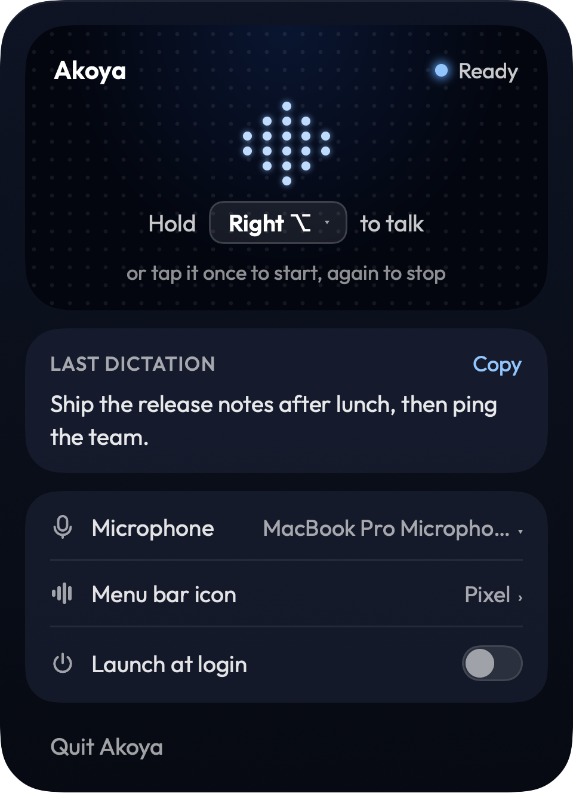

Hold Right Alt, speak, release. A pill rises above the taskbar while you talk, then disappears once your words are pasted. It plays on a loop below; use the buttons to hold one state.
Waveform only, 4 dots tall, with a timer. (Considered and dropped: a wider pill that also shows live words.)
Akoya's tray icon stays tucked behind the ⌃ arrow, so there's no extra clutter. Clicking it opens the same all-in-one panel as on the Mac: hotkey, microphone, last dictation and launch at startup. Shown with the Mac panel for now; the Windows one would match it.
